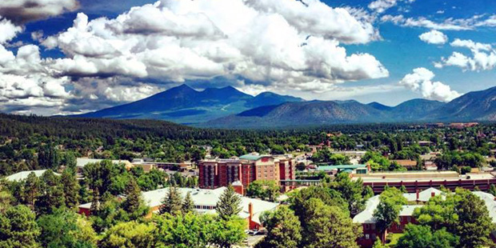
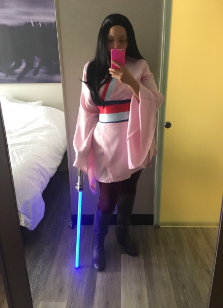

I was born into a traditional Navajo family (for the Kinyaa'áanii clan and to the Tódich'ii'nii clan) and grew up in a small town in Northern Arizona. Flagstaff is famed for it's beauty, resources and dark skies. A treasure trove of culture and geologic wonders.
It was where I developed a passion for music, beginning with the piano and voice at 4 years old, moving on to the flute in elementary school, finally discovering my love of percussion in Middle School. Several years and a number of punk bands later, I found myself gracing the stage as Christine in a college production of "The Phantom of the Opera", as well as a few other productions here and there. However, the real fun was to be had in costume and set design where I picked up a tonne of handy tips and tricks that I still utilise today with cosplay.
Oh yes! I am one of those proud nerds. Gussied up in carefully crafted armor, jedi robes and the odd ballgown now and again.
During my college years, I met a submariner who whisked me off to Hawaii for several years, while he finished out his service with the Navy. And after several wonderful years, we settled here in North Carolina. We decided to lay down our own roots here in Garner with our two young kids, two cats, one happy dog and an indifferent crested gecko. We as a family enjoy the outdoors, camping, bouldering and traveling.